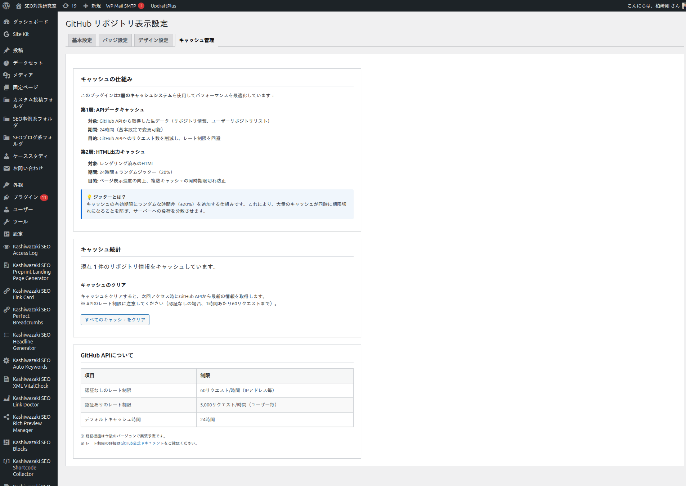
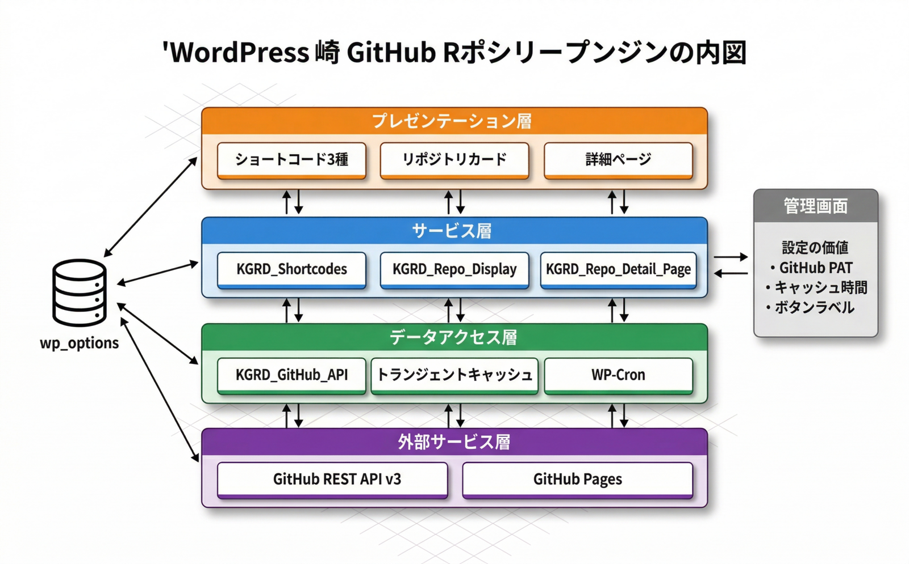

トラブルシューティング
よくある問題とその解決方法、動作要件、技術仕様をまとめています。
よくある問題と解決策
「Shortcode Error: ユーザーはHTTP経由のリクエストをブロックしました」と表示される
原因: サイトのwp-config.phpに WP_HTTP_BLOCK_EXTERNAL が true で設定されており、WP_ACCESSIBLE_HOSTS に api.github.com が含まれていません。
wp-config.phpを開き、WP_ACCESSIBLE_HOSTS の定義に api.github.com,raw.githubusercontent.com を追加します。
define('WP_ACCESSIBLE_HOSTS', 'localhost,api.github.com,raw.githubusercontent.com'); のように保存します。
本番サイトでは通常 WP_HTTP_BLOCK_EXTERNAL は設定されていないため、このエラーはローカル開発環境でのみ発生します。
GitHub API rate limit exceeded エラーが出る
原因: GitHub APIは未認証だと 60req/h、認証時は 5000req/h の制限があります。
GitHub → Settings → Developer settings → Personal access tokens → Fine-grained tokens でトークンを発行します（public_repo readスコープのみで十分）。
管理画面「基本設定」タブの「GitHub Personal Access Token」にペーストして保存します。
「キャッシュ管理」タブから手動でキャッシュをクリアし、再アクセスします。
キャッシュ有効期限を長めに設定（例: 12時間）することでAPIコール数を削減できます。
詳細ページが 404 エラーになる
原因: WordPress のリライトルールが古い、または詳細ページのベースパスが変更されたまま再フラッシュされていません。
WordPress 管理画面「設定 → パーマリンク」を開きます。
特に何も変更せずに「変更を保存」をクリックします。
該当の詳細ページにアクセスして表示を確認します。
ベースパスを変更した直後は必ずパーマリンクの再保存が必要です。
Cron 自動更新が実行されない
原因: WordPress の Cron は実際のサイトアクセスで実行されるため、アクセスがないと動作しません。また DISABLE_WP_CRON が true の場合は無効化されています。
「キャッシュ管理」タブで「自動更新を有効にする」にチェックが入っているか確認します。
wp-config.php で DISABLE_WP_CRON が true になっていないか確認します。
長時間アクセスがないサイトでは、OSのcrontabで wp cron event run --due-now を定期実行します。
WP-Cron は 6時間ごと（デフォルト）に追跡対象の全リポジトリの出力キャッシュを更新します。
カードに Pages ボタンが出ない
原因: 対象リポジトリで GitHub Pages が有効化されていない（has_pages=false）か、キャッシュに古いデータが残っています。
GitHub でリポジトリの Settings → Pages から Pages が有効か確認します。
「キャッシュ管理」タブで「すべてのキャッシュをクリア」を実行します。
該当ページを再読み込みします。
動作要件
| 項目 | 要件 |
|---|---|
| WordPress | 5.0 以上 |
| PHP | 7.2 以上 |
| 外部通信 | https://api.github.com および https://raw.githubusercontent.com へのHTTPS通信 |
| 推奨: Parsedown | erusev/parsedown がインストールされていればローカルでMarkdownをパース |
| 推奨: GitHub PAT | API レート制限緩和（60→5000req/h） |
| 対応ブラウザ | Chrome / Firefox / Safari / Edge の最新版 |
技術仕様
- GitHub API バージョン: REST API v3（Accept: application/vnd.github.v3+json）
- 認証方式: Bearer（
github_pat_*,ghp_*）/ token（Classic）の自動判別 - キャッシュ方式: WordPress Transient API（wp_options テーブル）
- キャッシュキー:
kgrd_output_+ MD5ハッシュ（ショートコード属性単位） - キャッシュ期間: 1〜24時間（既定6時間）+ 10〜30%のランダムジッタ
- Cron フック名:
kgrd_cache_refresh_event - Cron カスタムスケジュール:
kgrd_custom_interval - リライトルール登録: 追跡対象の各リポジトリごとに
/{base}/{slug}/?$ - データ保存先: wp_options テーブル（
kgrd_*プレフィックス） - 言語ドメイン:
kashiwazaki-github-repo-display
キャッシュ管理

管理画面「キャッシュ管理」タブからは、追跡中リポジトリ数・最終自動更新時刻・次回更新予定時刻・手動クリアボタンが利用できます。
アーキテクチャ
